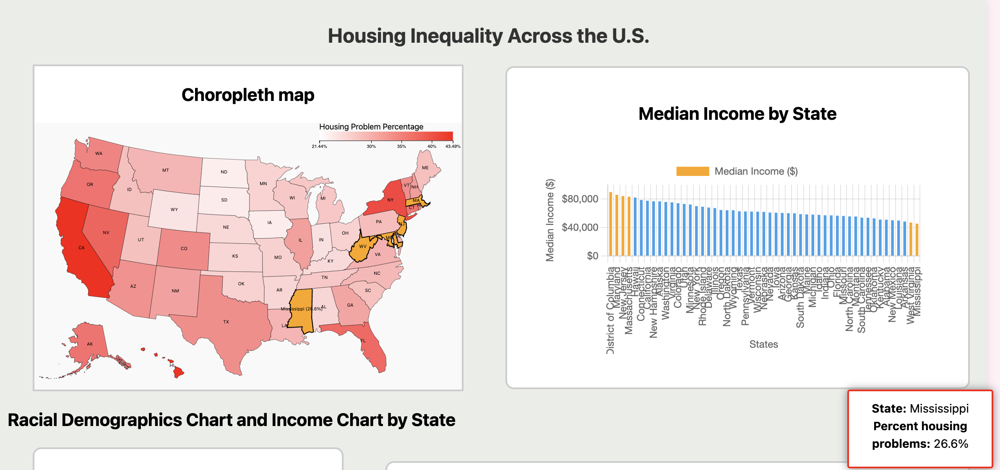
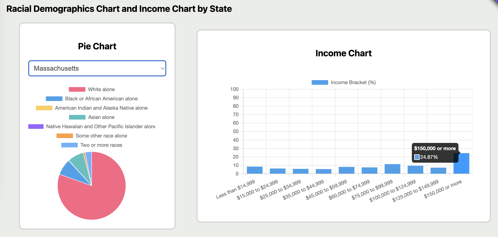

Demo Video
If you are unable to see the video, here is a link to the video instead.
Visualization explanation
Presentation deck: Click here to view
Our visualizations include a choropleth U.S. map and other interactive elements that allow users to explore housing inequality data across states. The map is color coded to represent the percentage of housing problems in each state, with housing problems defined as households with any of the following issues:- Housing unit lacks complete kitchen facilities
- Housing unit lacks complete plumbing facilities
- Household is overcrowded (HUD defines overcrowding as more than 1 person per room)
- Household is cost burdened (HUD defines cost burden as monthly housing costs (including utilities) exceeding 30% of monthly income)
Our Findings/Results
- Highest income: States like District of Columbia, Maryland, and Massachusetts appear on the far left, indicating the highest median incomes.It then highlights the states on the color map and shows the percentage of housing problems.
- Lowest income: States like Mississippi and West Virginia are on the far right, showing the lowest median incomes.  When we select a specific state on the bar, it highlights the state on the color map and the tooltip shows up at the bottom right corner. California, New York and Florida has the highest housing problems.
Next,
We then explored the demographics and income comparison. We found out WA, MA, MD has the highest income abovw 150k. And MS and WV has the lowest income under 14k. Data Analysis
This project uses datasets from the U.S. Department of Housing and Urban Development, including housing problems, demographic information, housing characteristics, and socioeconomic indicators by state from 2016 to 2020.
Our preprocessing steps involved data cleaning, transformation, and aggregation to facilitate meaningful analysis and visualization. First, we downloaded the datasets as Excel files from the HUD website and imported them into Google Sheets. We then cleaned the data by adding the appropriate column headers found in each dataset's metadata and removing empty columns and columns unrelated to our topic. Once we had our cleaned data, we explored it in Tableau to identify preliminary trends and patterns. We further reduced the data to include only the columns we needed for our visualizations, including percent housing problems (housing problem dataset), percent household income brackets (socioeconomic dataset), and percent racial demographics (race dataset) in separate sheets. Finally, we exported the data as CSV files, then converted them to JSON files for use in our visualizations. We then sorted the income data in descending order to make it easier to see the distribution of income across states. We found a GeoJSON file of US states to use in our map visualization, which we added our housing problems data to to create our choropleth map.
Task Analysis
After conducting interviews, we came up with our domain tasks, broken down into abstract tasks:
- What factors contribute the most to housing inequality? (summarize, explore, present)
- Do factors (such as race, income, etc.) affect housing inequality? (identify, locate, discover)
- Which locations are most affected by housing disparity? (compare, locate, discover)
- What trends can we find in the data? (summarize, explore, present)
The primary consumers of our visualization would be the general public, policymakers, possibly teachers, and researchers. This is because we could use our visualization as a source of raising awareness about housing inequality through the public, and it could reach policymakers into realizing the severity and passing reforms to tackle the issue. Researchers and teachers could also possibly play a similar role in being able to influence a new generation of students and scholars to help this issue.
Design Process
Sketches:Each group member created three possible sketches for our visualization, then we voted on our favorite elements from each sketch, pictured below.

- We thought using a map as a visualization would provide immediate geographical context. This makes sense since our data is across US states.
- Monochromatic color maps (light to dark) are appropriate to understand the range of housing rents as the luminosity and saturation channels can be employed to represent this data.
- Since the data is 2D, we don't have to worry about it being distorted or getting skewed one way.
- Mousing over each state can show details on demand.

- It gives a comparison across multiple values. Also, the grid forms an abstract spatial field where position, color, and size encode information.
- Color intensity forms a continuous field over this space, representing the percentage of housing units in each state.
- We like heat maps because they are simultaneous, as the viewer can see all the information at once.
- We like the compactness of it as well. It allows us to display a large amount of information in a relatively small space.

- Pie charts are helpful to visualize the weight of each slice as it corresponds to a specific category.
- We think it's a good visualization and appropriate for our project as it shows the proportions clearly for each state’s housing problems.
- It's helpful as it doesn't overcrowd and allows for a reasonable comparison between segments while being easily digestible.
- Since the data is discrete, using an appropriate color field will allow our perceptual system to identify stand-out and high-contrast colors, pointing to trends, much like how we perceive sequential colors on geographical spatial fields.
Using our sketches, we created a digital mockup of our visualization in Figma.

We prioritized seeing what factors affect housing inequality, specifically focusing on race and median income. We have charts showing race and median income alongside a US map portraying the percentage of housing problems for each state. The user can mouse over any state on the map to see the percentage of housing problems, and when selected the bar for that state in the bar chart will highlight that state’s median income. Also, the pie chart will change to display the racial demographics for the selected state. Vice versa, selecting a bar on the bar chart will select the state on the map. This helps the user compare percentages of housing problems across states, enhanced by the sequential color scale of the map. The user can explore the charts to compare race, income, and housing problems across states, and as a result, find trends in the data and focus on the states they are most interested in. This also ties into the task of seeing what locations are most affected by housing inequality, since the user can see the states most affected by housing problems.
Usability Testing:We conducted usability testing with peers to gather feedback on our visualization mockup. Participant feedback was generally positive, with users liking the spatial layout and finding the visualization easy to navigate and understand. Suggestions for improvement included using a color other than green for the map, as green is often associated with money or wealth, which is not what we are trying to convey. They suggested using a color scale that goes from white to the darkest color, as this would be easier to see. Also, users suggested sorting the bar chart in ascending/descending order rather than alphabetically to better assess trends, and possibly adding more pie and bar chart options to show more data.
Conclusion
We researched our chosen topic of housing inequality, finding data that would help us explore this issue. After interviewing, outlining our domain tasks, and iterating over our designs, we created a US color map displaying percentage of housing problems as well as a bar chart showing median income. We implemented brushing and linking between these charts to allow users to explore the data and find trends. We also created a pie chart showing racial demographics for each state and a bar chart that further broke down income brackets. Areas of improvement include refining the color scale of the map, allowing users to sort the bar chart in different ways, and adding more data to the pie and bar charts to let users explore a wider amount of data and uncover more patterns about factors that contribute to housing inequality. We could also add more information to the map's tooltip to give users more context about each state's housing problems. We can test our visualization with users to gather feedback in order to improve our design to enhance the user experience.
Acknowledgments
Packages/libraries, text, images, designs, etc. that we leveraged
- D3: Data-Driven Documents by Mike Bostock.
- Pure CSS responsive "Fork me on GitHub" ribbon by Chris Heilmann.
- Chart.js - Simple and flexible JavaScript charting library.
- React - A JavaScript library for building user interfaces.
- npm - The package manager for JavaScript.
- Node.js - JavaScript runtime built on Chrome's V8 JavaScript engine.
- SVG logo - Free SVG logos of the house and inequality symbol.
Built and designed by Jaimie, Samiya, Ian and Kelden